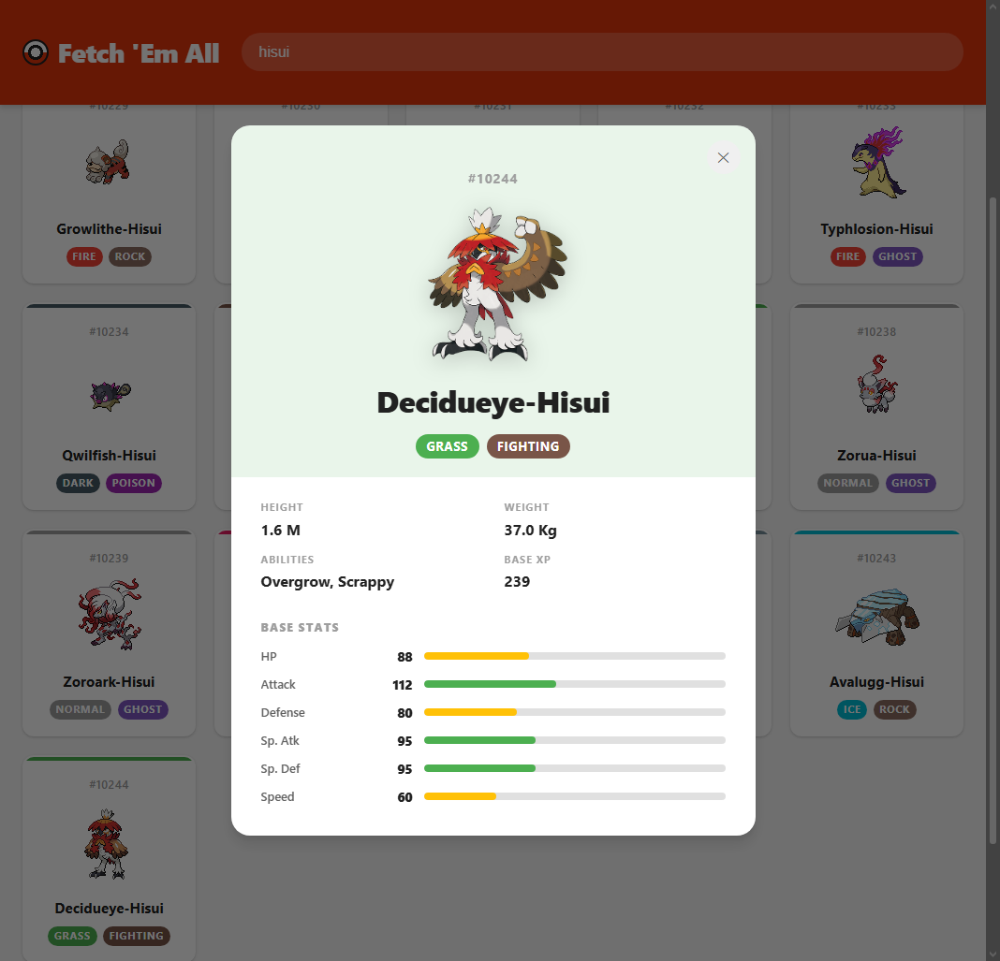
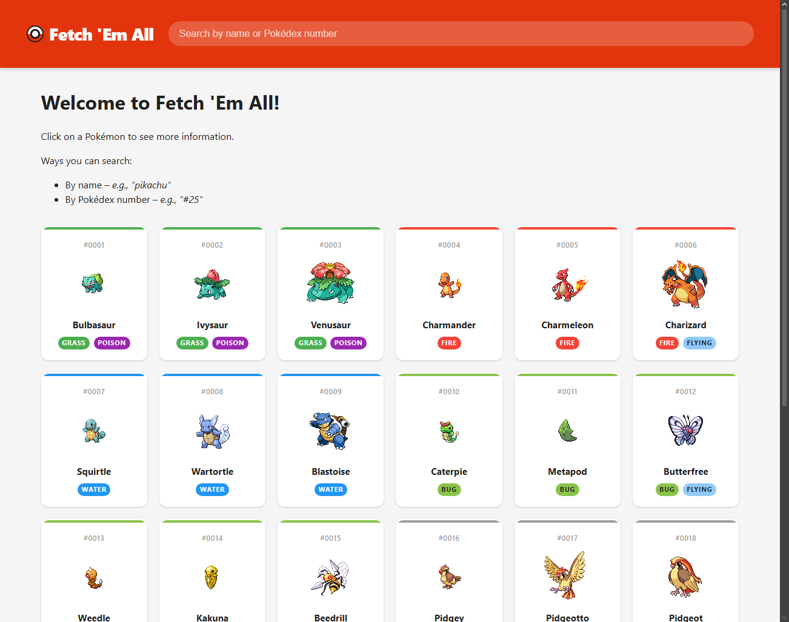
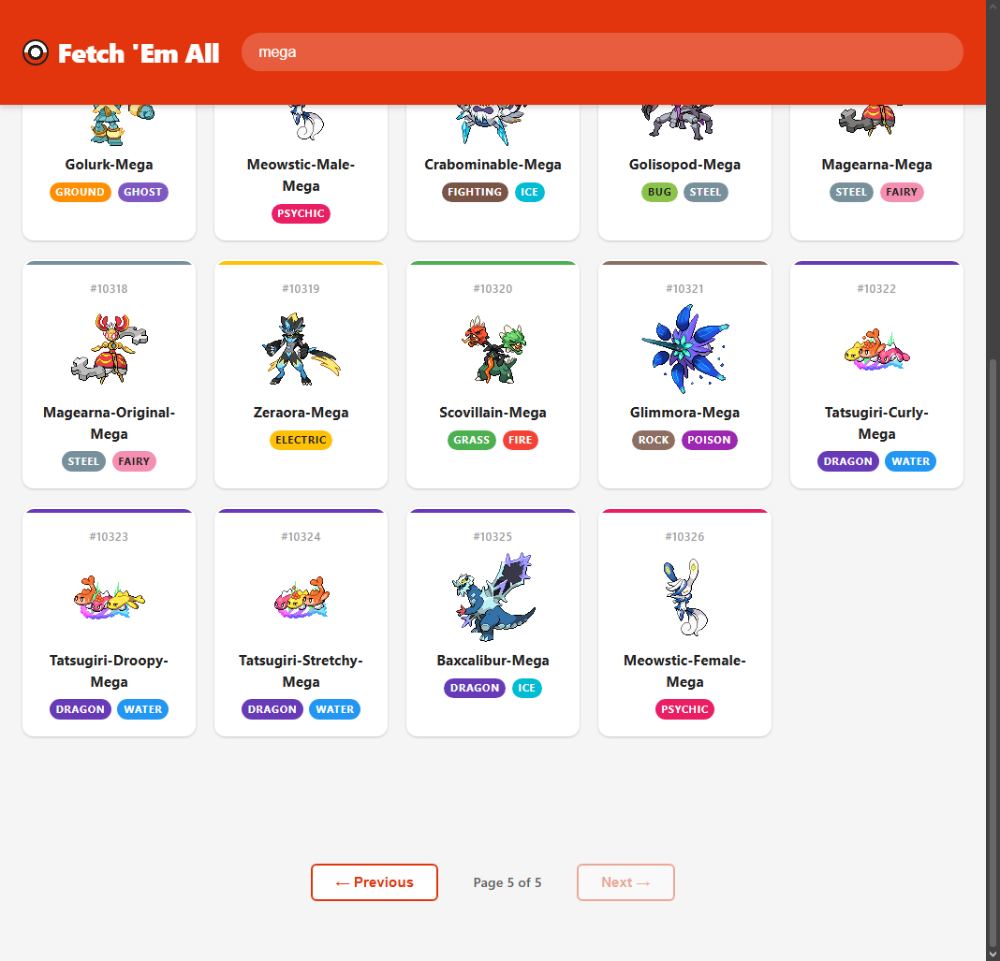

Fetch 'Em All
A Pokédex web app that pulls live data from PokéAPI. Browse and search Pokémon, then open a detail view with abilities and base stats.
- Started
- Built with
- Course
- WEB 241, JavaScript Technologies and Applications (Spring 2026)
- Source code
- github.com/cihake/fetch-em-all

Overview
Fetch 'Em All is a client-side JavaScript app built for WEB 241. It fetches live data from PokéAPI, a public web API, and presents it as a browsable, searchable Pokédex. The assignment asked for modern, modular JavaScript that handles loading, empty, and error states and stays accessible, and those requirements shaped the design.
Features
- A paginated grid of 20 Pokémon per page. Each card shows the sprite, number, name, and type badges.
- Search by name (partial names work) or by Pokédex number, such as
#25. - A detail view with official artwork, height, weight, abilities, base experience, and a bar for each of the six base stats.
- Loading, error, and “no results” states for every request.
- Keyboard and screen reader support. Cards can be focused and opened with Enter or Space, Escape closes the detail view and returns focus to the card you opened, and page changes are announced.
More screenshots


How it's built
Plain HTML, CSS, and JavaScript with no framework and no build step. The JavaScript is split into three files, each with one job:
api.jsholds the fetch helpers for PokéAPI.ui.jsturns data into HTML for the grid, the status messages, and the detail view.app.jskeeps the app's state and wires up events, pagination, and search.
Challenges and solutions
- The list endpoint returns only names and links. To show sprites and types, each page makes one request per Pokémon. They run in parallel with
Promise.all, so a page of 20 appears together instead of one card at a time. - PokéAPI has no search endpoint. A number search requests that Pokémon directly. A name search downloads the full list of names once, keeps it in memory, and filters it a moment after you stop typing, so later searches don't download it again.
- Search results need pages too. They are paged 20 at a time with their own offset, separate from the main browse view, so switching between searching and browsing works cleanly.
What I'd do differently
- Keep keyboard focus inside the detail view while it is open. Right now Tab can move to the page behind it.
- Cancel out-of-date searches, so a slow response can't replace the results of a newer one.
- Cache Pokémon that were already fetched. The detail view requests data the grid has already loaded.
- Respect the reduced-motion setting for the loading spinner and the smooth scrolling.
- Add automated tests for the search and pagination logic.